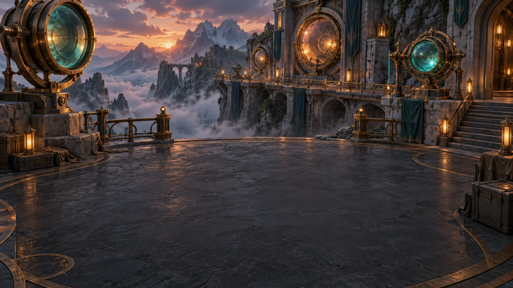
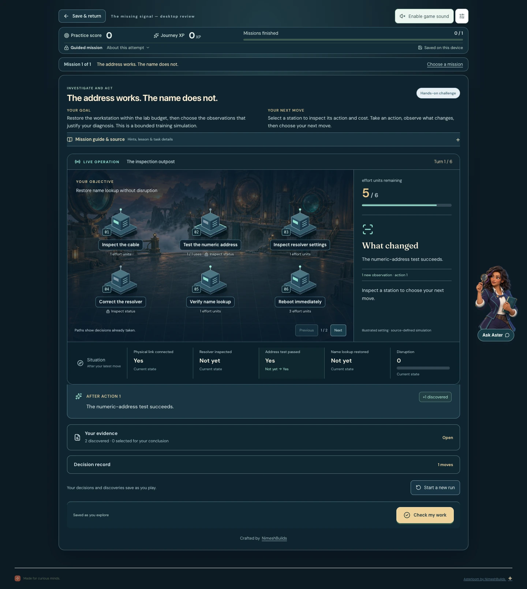
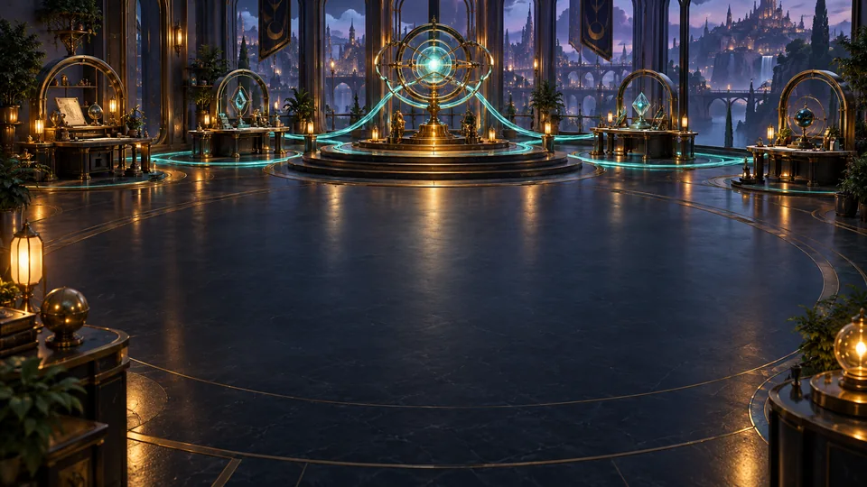
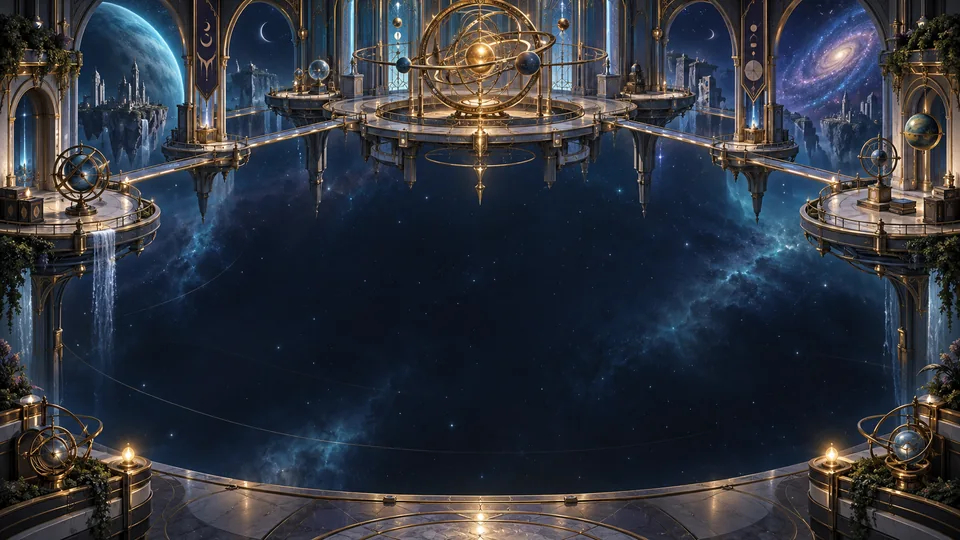
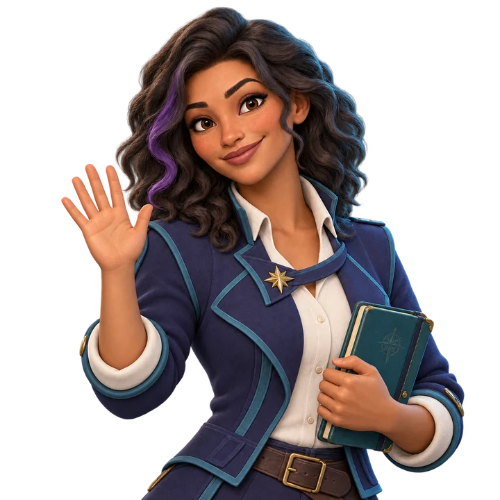

Rooted in the material
Lessons and missions are built around your sources. Follow the evidence back to its context.

A new world of learning
Your notes. Your sources. A world of things to discover.
Turn the material you care about into learning missions—with Aster
by your side.
A learning adventure in the making, by NimeshBuilds
From a pile of materials to a sense of discovery
Asterloom is a desktop studio for making learning personal. Start with your material, shape an adventure with AI, then take the time to understand, explore and apply it.
Add documents, notes, web pages or recordings. Your sources become the foundation of the learning experience.
Connect a supported provider or API. Asterloom uses your sources to plan the teaching, missions and setting.
Study the ideas, put them into practice, and see what your choices change. Finished games can be played offline.
Inside a learning adventure
The idea is simple: teach the concept, give it a purpose, and let you work with it. Every mission should connect the action to what you’re learning.
A clear goal, source-linked teaching and a worked example before the challenge.
Inspect a station, choose a tool, route a system or weigh the evidence. See the consequences.
Feedback connects your choices to the material, while your progress saves on your device.
A look at the next chapter
An actual desktop capture using original sample material.
This newer gameplay is not in the v0.7.14 Mac preview.

Explore the full screenshotA setting for every kind of curiosity
From an intricate systems workshop to a bright island expedition, Asterloom’s illustrated worlds give each adventure its own atmosphere.

A world of tools and possibilities, made for thinking through how things fit together.

Find patterns, follow the evidence and explore the relationships behind the bigger picture.
A brighter, playful setting for younger explorers and their next moment of understanding.
A glimpse of the visual library. World artwork illustrates the settings; it is not a gameplay recording.

A little guidance. A little encouragement.
Aster helps you find your footing—from creating a game to working through a mission. She brings the focus back to your material and your next step.
Local source search helps you find relevant passages and revisit the ideas behind a challenge.
Connect AI for source-grounded explanations. It’s optional during play; the finished adventure doesn’t need it.
Made to stay with you
Lessons and missions are built around your sources. Follow the evidence back to its context.
Finished games run locally with saved progress. No AI connection is required to keep playing.
Export one adventure with its learning content and source files. Share material you have permission to share.
We’re building Asterloom for the joy of understanding something new. Explore the project and help shape the next chapter of learning through play.
A few things worth knowing
New game creation uses a supported AI provider or API connection to turn your sources into a learning plan and missions. Finished games play locally without AI. You can optionally connect AI to Aster for additional source-grounded help.
Provider availability, authentication and model quality vary. See the project’s provider documentation for supported connection options and their current limitations.
Start with PDFs, text and Markdown files, copied text, web pages or audio and video files such as MP3 and MP4. Import quality depends on the document, website and transcription. Review the extracted material before relying on it.
NotebookLM and YouTube links use assisted import workflows. They are not a guarantee that private notebooks, protected pages or every video transcript can be read automatically.
The landscapes are artwork used for Asterloom’s learning settings. The image in “Inside a learning adventure” is an actual desktop screenshot using sample material. It shows the current development work, which is newer than the published v0.7.14 Mac preview.
The experimental Godot player is a separate path with a smaller feature set. The main desktop player currently has the fuller set of Aster and source tools.
Asterloom supports exporting one learning notebook at a time with its content, source artifacts and a desktop player. Finished games don’t require the creation AI to play. Export targets depend on the available runtime packages. The published v0.7.14 preview is for macOS 13 or later, on Apple silicon and Intel. It does not include a Windows download.
Only share source materials you own or have permission to distribute. Exported runtime software remains subject to the Asterloom license.
Asterloom’s personal learning license permits free personal and family learning. Business and institutional use requires a separate written license. The license has use restrictions and is not an unrestricted open-source license.
The application and website source are available together in the public repository. Your learning materials remain yours. AI provider charges may apply. See the full license for the terms.